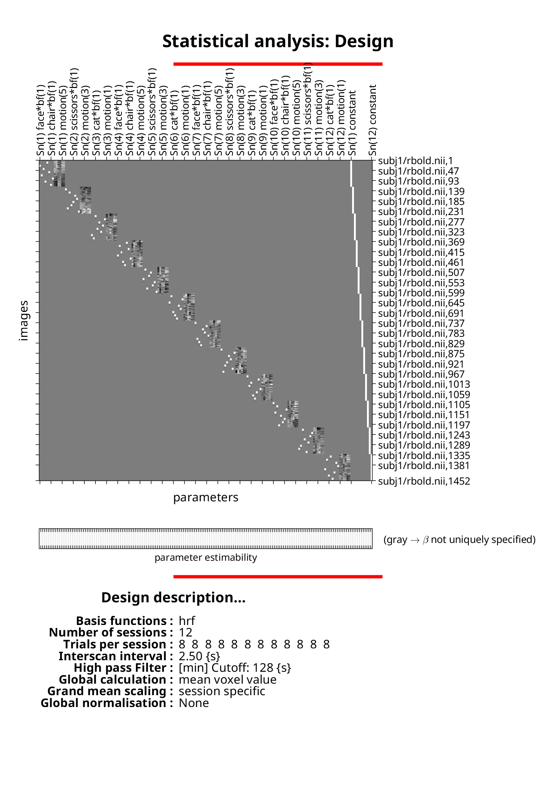

% select subject
sub = 'subj1';
% load information
load(fullfile(sub, 'info.mat'))
% BOLD data (contains realignment information)
fnBOLD = fullfile(sub, 'bold.nii');
% realigned BOLD data
fnrBOLD = fullfile(sub, 'rbold.nii');
% directory for model
modelDir = fullfile(sub, 'model');
% file containing model
fnSPM = fullfile(modelDir, 'SPM.mat');Model
A model for the data is set up and estimated in SPM
Specify the model
Instead of the approach of the paper to use a single design matrix across all sessions, we here follow the standard approach of SPM, and use session-wise design matrices. Each of them contains eight HRF-convoluted regressors corresponding to the stimulus presentations of the eight conditions, six motion regressors derived from the realignment parameters, and a constant regressor.
% get realignment parameters for motion regressors
V = spm_vol(fnBOLD);
mat = cat(4, V.mat);
% create directory
mkdir(modelDir)
% SPM module 'fMRI model specification'
fmri_spec = struct;
fmri_spec.dir = {modelDir}; % model directory
fmri_spec.timing.units = 'secs'; % units for onsets and durations
fmri_spec.timing.RT = TR; % repetition time (interscan interval)
fmri_spec.timing.fmri_t = 25; % microtime resolution: 0.1 s
fmri_spec.timing.fmri_t0 = 12; % microtime onset: middle of scan
% for each session
for si = 1 : nSessions
% indices of scans in 4d BOLD image corresponding to session
vi = (si - 1) * nVolsPerSession + (1 : nVolsPerSession);
fmri_spec.sess(si).scans = arrayfun(@(i) ...
sprintf('%s,%d', ... % SPM's <filename>,<scan> syntax
fullfile(pwd, fnrBOLD), i), ... % filename must include full path
vi, ...
'UniformOutput', false)';
% for each condition
for ci = 1 : nConds
% name, onsets, and durations
fmri_spec.sess(si).cond(ci).name = conditions{ci};
fmri_spec.sess(si).cond(ci).onset = onsets{si, ci};
fmri_spec.sess(si).cond(ci).duration = durations{si, ci};
fmri_spec.sess(si).cond(ci).tmod = 0; % no time modulation
fmri_spec.sess(si).cond(ci).orth = 1;
end
fmri_spec.sess(si).multi = {''}; % no 'multiple conditions'
% motion regressors from realignment parameters
Q = nan(nVolsPerSession, 6);
for i = 1 : nVolsPerSession
qq = spm_imatrix(mat(:, :, vi(i)) / mat(:, :, vi(1)));
Q(i, :) = qq(1 : 6);
end
for mi = 1 : 6
fmri_spec.sess(si).regress(mi).name = sprintf('motion(%d)', mi);
fmri_spec.sess(si).regress(mi).val = Q(:, mi);
end
fmri_spec.sess(si).multi_reg = {''}; % no 'multiple regressors'
fmri_spec.sess(si).hpf = 128; % high-pass cutoff time (def.)
end
fmri_spec.bases.hrf.derivs = [0 0]; % no HRF derivatives
fmri_spec.volt = 1; % do not model interactions
fmri_spec.global = 'None'; % no global intensity normalization
fmri_spec.mthresh = 0.8; % masking threshold (def.)
fmri_spec.mask = {''}; % no explicit mask
fmri_spec.cvi = 'AR(1)'; % model serial correlations as AR(1) (def.)
% run module
matlabbatch = {};
matlabbatch{1}.spm.stats.fmri_spec = fmri_spec;
spm_jobman('run', matlabbatch(1))Initialising batch system... done.
------------------------------------------------------------------------
18-Nov-2023 21:12:29 - Running job #1
------------------------------------------------------------------------
18-Nov-2023 21:12:30 - Running 'fMRI model specification'
SPM12: spm_fMRI_design (v7739) 21:12:30 - 18/11/2023
========================================================================
Saving fMRI design : ...SPM.mat saved
SPM12: spm_fmri_spm_ui (v7738) 21:12:31 - 18/11/2023
========================================================================
Mapping files : ...done
Calculating globals : ...done
Saving SPM configuration : ...SPM.mat saved
Saving SPM configuration : ...SPM.mat saved
Completed : 21:12:43 - 18/11/2023
18-Nov-2023 21:12:43 - Done 'fMRI model specification'
18-Nov-2023 21:12:43 - Done
Visualize the model
load(fullfile(modelDir, 'SPM.mat'), 'SPM')
filenames = SPM.xY.P(:, numel(pwd) + 2 : end);
filenames = reshape(cellstr(filenames), size(SPM.xY.VY));
spm_DesRep('DesMtx', SPM.xX, filenames, SPM.xsDes);

Estimate the model
% SPM module 'fMRI model estimation'
fmri_est = struct;
fmri_est.spmmat = {fnSPM}; % path to `SPM.mat`
fmri_est.write_residuals = 0; % do not write residuals
fmri_est.method.Classical = 1; % frequentist statistical estimation
% run module
matlabbatch = {};
matlabbatch{1}.spm.stats.fmri_est = fmri_est;
spm_jobman('run', matlabbatch(1))
------------------------------------------------------------------------
18-Nov-2023 21:12:50 - Running job #1
------------------------------------------------------------------------
18-Nov-2023 21:12:50 - Running 'Model estimation'
SPM12: spm_spm (v7738) 21:12:50 - 18/11/2023
========================================================================
SPM12: spm_est_non_sphericity (v7577) 21:12:53 - 18/11/2023
========================================================================
Chunk 2/2 : ...done
Temporal non-sphericity (27073 voxels) : ...ReML estimation
ReML Block 1
ReML Iteration 1 : ...9.827664e+00 [+4.25]
ReML Iteration 2 : ...5.884532e-01 [+4.50]
ReML Iteration 3 : ...1.599118e-02 [+4.75]
ReML Block 2
ReML Iteration 1 : ...1.118494e+01 [+4.25]
ReML Iteration 2 : ...8.181662e-01 [+4.50]
ReML Iteration 3 : ...2.286568e-02 [+4.75]
ReML Block 3
ReML Iteration 1 : ...6.901230e+00 [+4.25]
ReML Iteration 2 : ...1.429964e-01 [+4.50]
ReML Iteration 3 : ...1.248735e-03 [+4.75]
ReML Block 4
ReML Iteration 1 : ...9.365361e+00 [+4.25]
ReML Iteration 2 : ...3.411252e-01 [+4.50]
ReML Iteration 3 : ...5.701104e-03 [+4.75]
ReML Block 5
ReML Iteration 1 : ...1.027357e+01 [+4.25]
ReML Iteration 2 : ...4.295659e-01 [+4.50]
ReML Iteration 3 : ...7.688102e-03 [+4.75]
ReML Block 6
ReML Iteration 1 : ...1.323103e+01 [+4.25]
ReML Iteration 2 : ...3.478206e-01 [+4.50]
ReML Iteration 3 : ...6.419885e-03 [+4.75]
ReML Block 7
ReML Iteration 1 : ...1.774148e+01 [+4.25]
ReML Iteration 2 : ...1.183276e-01 [+4.50]
ReML Iteration 3 : ...1.092870e-03 [+4.75]
ReML Block 8
ReML Iteration 1 : ...1.752418e+01 [+4.25]
ReML Iteration 2 : ...1.037713e-01 [+4.50]
ReML Iteration 3 : ...8.001813e-04 [+4.75]
ReML Block 9
ReML Iteration 1 : ...2.328423e+01 [+4.25]
ReML Iteration 2 : ...8.247045e-01 [+4.50]
ReML Iteration 3 : ...1.707144e-02 [+4.75]
ReML Block 10
ReML Iteration 1 : ...2.362216e+01 [+4.25]
ReML Iteration 2 : ...2.052704e-01 [+4.50]
ReML Iteration 3 : ...9.280063e-04 [+4.75]
ReML Block 11
ReML Iteration 1 : ...7.029397e+00 [+4.25]
ReML Iteration 2 : ...4.771267e-03 [+4.50]
ReML Block 12
ReML Iteration 1 : ...7.075062e+00 [+4.25]
ReML Iteration 2 : ...5.880034e-02 [+4.50]
SPM12: spm_spm (v7738) 21:12:58 - 18/11/2023
========================================================================
Chunk 2/2 : ...done
Spatial non-sphericity (over scans) : ...done
Saving SPM.mat : ...done
Completed : 21:13:08 - 18/11/2023
Done
18-Nov-2023 21:13:08 - Done 'Model estimation'
18-Nov-2023 21:13:08 - Done
Our analyses only need the updates to the SPM.mat file made during estimation, not the parameter estimates themselves. We therefore delete the created beta_####.nii files.
load(fnSPM, 'SPM');
for i = 1 : numel(SPM.Vbeta)
spm_unlink(fullfile(modelDir, SPM.Vbeta(i).fname))
end